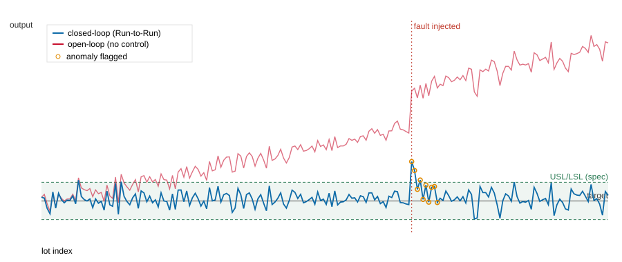

「装置データから不良原因を特定し、装置制御にフィードバックする」——この一連のループを、製品ソフトの言語であるC#/.NETで実装しました。半導体プロセス制御の中核であるRun-to-Run(R2R)レシピ補正と、EWMA管理図による装置データ異常検知を、テスト付きで一体化。リポジトリ内のPython/C++プロセス制御群(研削/CMP/レーザーのAPC)を、実装言語ごと補完する位置づけです。
プロセスモデル y = offset + gain·u + noise で、装置のドリフト(工具摩耗・消耗品劣化)を offset として表現。EWMAコントローラがロット間の測定から offset をノイズ耐性つきで推定し、モデルを逆算して次ロットの入力 u = (target − offset推定)/gain を決める。並行して、残差をEWMA管理図で監視し、時変管理限界を超えたら異常としてフラグ(小さな持続シフトも捕捉、起動時は中心値から開始して誤警報を抑制)。
200ロットの評価:途中(lot 130)でステップ状の故障を注入。オープンループはドリフトで規格外へ落ち歩留まり17%まで低下するが、R2R制御は歩留まり97%・Cpk 0.67を維持し、故障はその場で検知しつつ制御が吸収する。評価用の合成データ生成(再現可能なsplitmix64乱数)も同梱——求人の「シミュレーションによる評価環境自動化」に対応。

| 指標 | オープンループ | Run-to-Run制御 |
|---|---|---|
| 目標へのRMSE | 4.61 | 0.45 |
| Cpk(工程能力) | −0.33 | 0.67 |
| 規格内歩留まり | 17% | 97% |
関連(実装済み):DISCOダイシング/ブレード予知保全・較正ベイズ余寿命・CMP/研削/レーザーのAPC(Python/C++)。出所:disco_apc_csharp/(C#、mono/dotnet両対応、テスト同梱)。